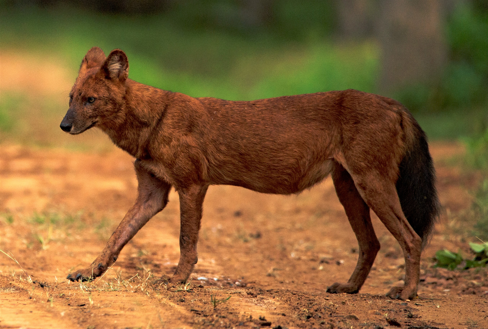

Sói lửa hay chó sói lửa, sói đỏ hay còn biết đến với các tên khác như Chó hoang châu Á, Chó hoang Ấn Độ (danh pháp khoa học: Cuon alpinus) là một loài thú ăn thịt thuộc họ Chó (Canidae), thành viên duy nhất của chi Cuon. Chó sói lửa là động vật sống theo bầy đàn đông đúc giống như chó hoang Châu phi và sói xám, khi đi theo bầy đàn thì sói lửa rất hung tợn và có phương pháp săn mồi tàn độc, đồng thời có thể gây ra nổi hiểm nguy cho cả các mãnh thú khác như hổ hay báo và cả gấu.
Phân bố
Sói lửa có nguồn gốc từ Nam Á. Khu vực phân bố của nó là từ 10° vĩ nam tới 55° vĩ bắc; 70° kinh đông tới 170° kinh đông[cần dẫn nguồn]. Khu vực phân bố lịch sử của nó trải rộng từ Ấn Độ tới Trung Quốc, Việt Nam và kéo dài xuống tới Malaysia và Indonesia, với đảo Java là giới hạn phía nam.
Trong vài thập niên gần đây, đã mất đi mất lượng lớn môi trường sống của nó và các khảo sát hạn chế đã chỉ ra rằng có sự suy giảm và phân mảnh nghiêm trọng của khu vực phân bố lịch sử này. Khu vực phân bố hiện tại của sói lửa trải dài từ biên giới với Nga và dãy núi Altay ở Mãn Châu (Trung và Đông Á) tới bắc và tây Pakistan và các dải rừng của Ấn Độ, Myanma cùng bán đảo Mã Lai. Các quần thể đông đúc nhất hiện tại có lẽ ở Trung (đặc biệt là vùng cao nguyên), Tây và Bắc Pakistan và Nam Ấn Độ.
Sói lửa thích ứng với một loạt các môi trường sống. Thông thường nó sinh sống trong các môi trường rừng cây lá sớm rụng khô và ẩm cũng như rừng nhiệt đới rậm rạp như các rừng mưa nhiệt đới, để có sự ẩn nấp tốt cho việc săn mồi. Nó sống trong các khu vực có thảm thực vật dạng rừng nguyên sinh, thứ sinh, thoái hóa, thường xanh và bán thường xanh, các rừng cây gai khô, cũng như thảm rừng-trảng cây bụi. Tuy nhiên, nó cũng có thể sống trong các rừng rậm núi cao, các bãi cỏ và các thảo nguyên thoáng đãng tại Kashmir và Mãn Châu. Phần thứ hai trong tên gọi khoa học của nó, alpinus, gợi ý rằng sói lửa thường được tìm thấy trong khu vực miền đồi núi.
Chúng ưa thích các không gian thoáng đãng nên trong thời gian ban ngày chúng có thể thấy trên các con đường xuyên qua rừng nhiệt đới, các bờ sông và trong các khoảng rừng thưa của rừng nhiệt đới. Sói lửa sinh sống trong một khoảng rộng kiểu khí hậu mà họ Chó có thể sống – từ vùng lạnh ôn đới tới vùng nóng nhiệt đới, nhưng không thấy có trong các sa mạc.
Các yếu tố ảnh hưởng tới môi trường sống của nó là nước, sự hiện diện của các loài thú săn mồi lớn khác (sự canh tranh), sự dồi dào của con mồi (các loài động vật móng guốc từ trung bình tới lớn), mật độ dân cư địa phương cũng như các khu vực sinh sản phù hợp.
Tiến hóa và phân loại học
Sói đó có nguồn gốc từ hậu Pleistocen, và có quan hệ gần gũi với chó rừng hơn là sói.[5] Một giả thuyết cho rằng sói lửa trở thành những động vật xã hội khi thích nghi sống chung với hổ và báo hoa mai Ấn Độ.[6]
George Gaylord Simpson xếp sói lửa trong phân họ Symocyoninae cùng với chó hoang châu Phi và chó lông rậm vì chúng có chung đặc điểm giải phẫu học. Nhiềi người nghi vấn về phân loại của ông do cho rằng các đặc điểm chung này là do tiến hóa hội tụ. Juliet Clutton-Brock đã kết tuận từ việc so sánh hình thái, tập tính và sinh thái của 39 loài trong họ Chó ngoại trừ hộp sọ và cách mọc răng, sói lửa giống với các loài trong các chi Canis,
Dusicyon và Vulpes/Alopex hơn là chó hoang châu Phi và chó lông rậm.[5] Một nghiên cứu so sánh giữa sói lửa và các loài khác trong họ Chó về mtDNA năm 1997 cho thấy sói lửa tách nhánh tiến hóa từ dòng Lupus lupus trước khi chó rừng lưng đen và chó rừng lông vàng tách nhánh, vào khoảng vài triệu năm trước khi thuần hóa chó.[7]